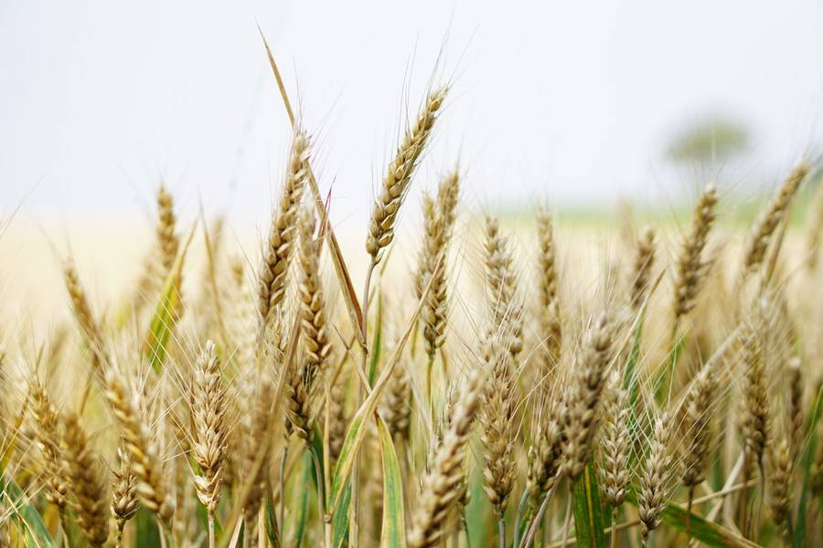
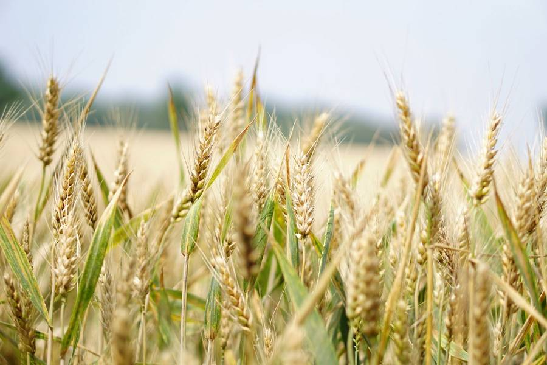
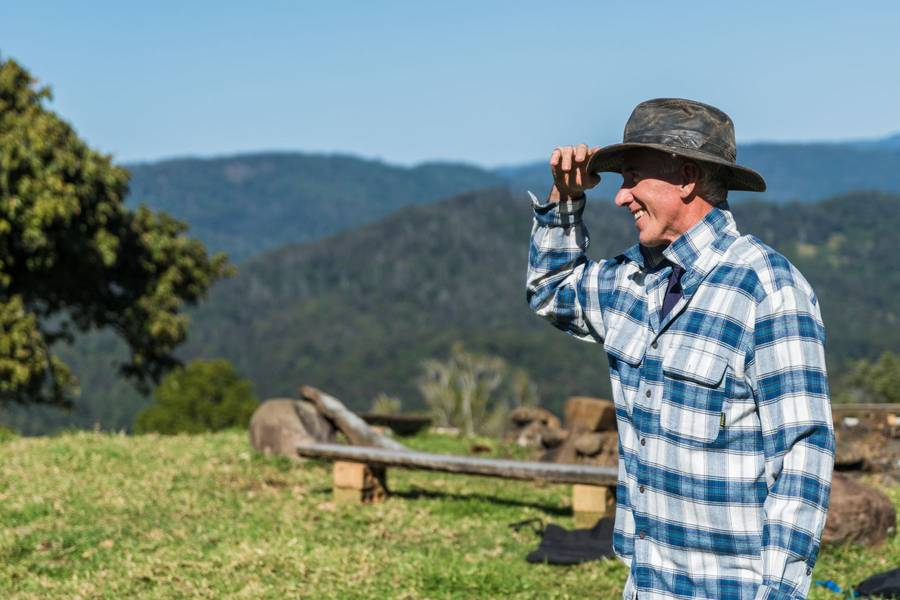
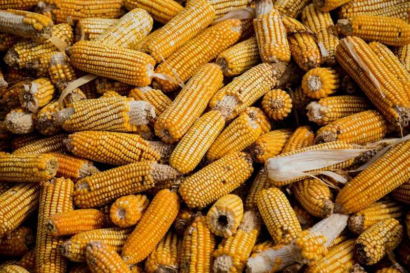

Revenda técnica · norte do Mato Grosso
Defensivo certo, na dose certa, antes da janela fechar.
A Várzea separa o produto do talhão, não do palpite. Soja, milho e algodão na região de Sorriso, com agrônomo de balcão e caminhão na fazenda.

Quem deixa para depois aplica em cima da pressa.
O que sai no caminhão
Nomes da casa, dose de referência e embalagem. Abra a ficha. Nada aqui é de marca real — é a vitrine de uma revenda fictícia.

Várzea Desseca
Herbicida de manejo · 3 L/ha · bombona 20 L
Dessecação antes do plantio. O agrônomo da casa confirma a dose pelo estágio da planta e pelo volume de calda.
- Culturas
- Soja, milho e algodão
- Dose de referência
- 3 litros por hectare
- Embalagem
- Bombona de 20 litros
- Na prática
- Em 200 hectares são 30 bombonas. A calculadora fecha essa conta com o seu talhão.

Folha Larga MT
Pós-emergente · 1 L/ha · galão 5 L
Para folha larga na soja, com a planta daninha ainda pequena. Não é receita: é ponto de partida da conversa.
- Cultura
- Soja
- Dose de referência
- 1 litro por hectare
- Embalagem
- Galão de 5 litros
- Janela
- Aplicar com a lavoura no estádio recomendado pelo agrônomo, longe de estresse hídrico forte.

Ferrugem Fora
Fungicida protetor · 0,5 L/ha · galão 5 L
Entra no programa da soja quando a vitrine e o talhão mostram que a ferrugem não pode esperar a próxima chuva.
- Cultura
- Soja
- Dose de referência
- 0,5 litro por hectare
- Embalagem
- Galão de 5 litros
- Na prática
- Quem fecha o programa cedo não corre atrás de produto no pico da doença.

Lagarta Cerrado
Inseticida · 0,3 L/ha · frasco 1 L
Posicionado para lagarta em soja, milho e algodão. A dose muda com a pressão e com o tamanho da lagarta.
- Culturas
- Soja, milho e algodão
- Dose de referência
- 0,3 litro por hectare
- Embalagem
- Frasco de 1 litro
- Cuidado
- Respeite o intervalo e o alvo. Mistura de tanque só com orientação.

Verde Foliar K
Potássio foliar · 1,5 L/ha · bombona 20 L
Complemento foliar para enchimento. Não substitui a adubação de base que o solo pediu na análise.
- Culturas
- Soja e milho
- Dose de referência
- 1,5 litro por hectare
- Embalagem
- Bombona de 20 litros
- Quando
- No estádio em que a folha ainda aproveita, não no desespero da semana da colheita.

TS Vigor
Tratamento de semente · 200 mL/100 kg
Tratamento industrial de referência para semente de soja que vai enfrentar poeira e percevejo no arranque.
- Cultura
- Soja
- Dose de referência
- 200 mL para cada 100 kg de semente
- Embalagem
- Bombona de 5 litros
- Conta
- Para 4.000 kg de semente, são 8 litros. A calculadora usa a dose por hectare dos demais itens; este fica na ficha.

Nitro Base
Nitrogenado de cobertura · 150 kg/ha
Cobertura do milho quando a lavoura pede nitrogênio e a chuva ainda ajuda a incorporar.
- Cultura
- Milho
- Dose de referência
- 150 kg por hectare
- Embalagem
- Big bag de 500 kg
- Na prática
- Em 100 hectares são 15 toneladas, 30 big bags. Combine a entrada na fazenda antes do V4.

Aderência
Adjuvante · 50 mL/100 L de calda
Vai junto da calda para espalhar e fixar. A dose é sobre o volume de água, não sobre o hectare direto.
- Culturas
- Soja, milho, algodão e feijão
- Dose de referência
- 50 mL a cada 100 litros de calda
- Embalagem
- Galão de 5 litros
- Exemplo
- Calda de 100 L/ha em 80 ha pede 4 litros de adjuvante. Confira o volume real do pulverizador.
Nada neste filtro. Troque o tipo ou a cultura.
Por que a fazenda volta
A ficha sai com cultura, dose e cuidado. O vendedor não empurra o que está no fundo do galpão.
Sorriso, Lucas do Rio Verde, Nova Mutum, Sinop e as vicinais. O caminhão combina a hora da chuva.
Quem fecha o programa com antecedência não fica na fila quando a ferrugem aparece no grupo.
Ferramenta de balcão
Quanto separo para este talhão?
Escolha o produto e a área. A conta usa a dose de referência da casa. É ilustrativa: o agrônomo ajusta pelo talhão.
A casa
Começou num depósito. Ficou porque acertava a dose.
A família Dorneles abriu a Várzea em 2008, na saída de Sorriso, vendendo o que chegava. O produtor voltou quando a indicação passou a caber no talhão dele, não na promoção da semana.
- 2008Depósito pequeno e caderno de fiado. A entrega era a caminhonete da casa.
- 2014Primeiro agrônomo de carteira. A ficha de aplicação substituiu o “usa o de sempre”.
- 2019Galpão novo e rota até Lucas e Nova Mutum. A janela da soja passou a ter reserva.
- HojeSeis agrônomos, balcão em Sorriso e o hábito de atender o áudio das 21h com número, não com desculpa.
Quem responde
Helena Dorneles
Sócia. Conhece a carteira da BR-163 pelo nome da fazenda.
Paulo Vieira
Engenheiro agrônomo. Fecha dose, mistura e hora de entrar no talhão.
Íris Campos
Logística. Combina o caminhão com a chuva e com a porteira.
“Pedi o fungicida às nove da noite. O caminhão entrou antes da reboleira andar.”
“A ficha veio com litro por hectare e número de bombona. Meu gerente não precisou refazer a conta.”
“No algodão, errar a janela custa caro. Eles avisaram a reserva antes de eu pedir.”
“Não é o mais barato do papel. É o que chega quando a lavoura pede.”
O campo que a casa acompanha
Quem caminha junto
Nomes genéricos de demonstração. Não são marcas registradas nem logos de empresas reais.
- Solo Norte Lab
- Embalagem Cerrado
- Transporte Vereda
- Análise de Semente MT
- Filme Agrícola Planalto
- Nutri Lab Campo
Perguntas de quem vai aplicar
Sim, num raio de cerca de 180 km de Sorriso, combinando a janela e o estado da estrada. Fora disso, a gente fala antes de prometer.
É referência da casa. Estádio da planta, pressão de praga e volume de calda mudam o número. O agrônomo confirma antes de sair o caminhão.
Dá, para quem fecha o programa com antecedência. No pico, o estoque vai para quem já combinou.
Atendem. A calculadora aceita talhão pequeno. O que muda é o frete, e isso a gente combina no WhatsApp.
Pode. O foliar e o nitrogenado fazem mais sentido com o papel da análise do que com a moda da vizinhança.
Para o dono da revenda
Um site nesta linha, com o nome da sua casa.
Esta página é demonstração. Se a sua revenda precisa de catálogo, dose por hectare e WhatsApp que o produtor entende, peça a prévia.
Quero uma prévia do meu site